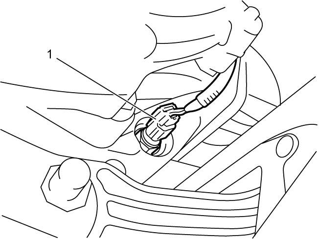

3C
| Transfer Oil Temperature Sensor Removal and Installation |
Removal
1)Hoist vehicle.
2)Drain transfer oil. 
3)Disconnect transfer oil temperature sensor connector (1), and remove transfer oil temperature sensor (2).


 "Expand image")
| Transfer Oil Temperature Sensor Removal and Installation |